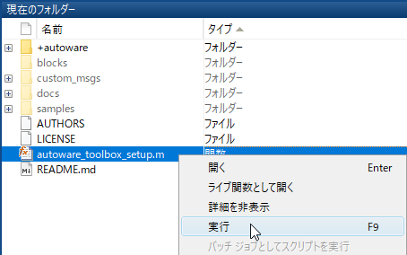
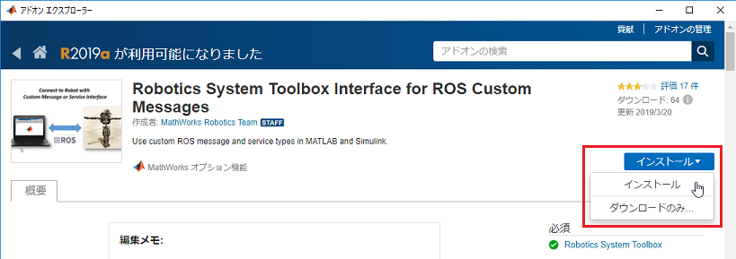
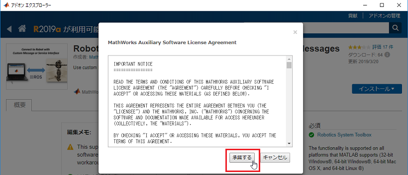
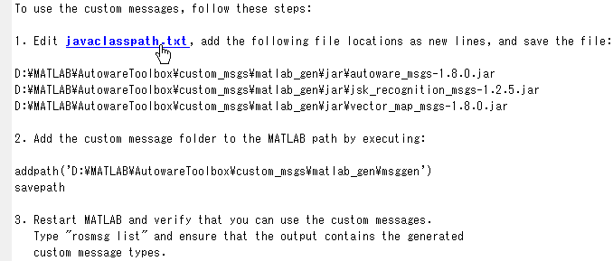

Autoware Toolbox のインストール
MATLAB で Autoware Toolbox を利用するための手順を説明します。
Contents
1. Autoware Toolbox のダウンロード
GitHub にある Autoware Toolbox のリポジトリをローカルにクローン（またはダウンロード）します。
2. Autoware Toolbox を MATLAB 検索パスに登録
Autoware Toolbox のルートフォルダにある autoware_toolbox_setup.m を実行します。

3. Robotics System Toolbox Interface for ROS Custom Messages のインストール
a. インストール済みか確認します。
下記のプログラムを範囲選択して実行（F9）するか、MATLAB コマンドウィンドウに貼り付けて実行してください。
addons = matlab.addons.installedAddons; addon_id = 'RO_CUSTOM_ROS_INTERFACE'; tf = strcmp(addon_id, addons.Identifier); installed_ros_if = any(tf); if installed_ros_if disp('Robotics System Toolbox Interface for ROS Custom Messages がインストールされています。'); else disp('Robotics System Toolbox Interface for ROS Custom Messages がインストールされていません。'); end
以下に範囲選択の実行例を示します。
上記プログラムを実行すると、インストール済みの場合は、MATLAB コマンドウィンドウに 「Robotics System Toolbox Interface for ROS Custom Messages がインストールされています。」 と表示されます。

インストールされていない場合は、MATLAB コマンドウィンドウに 「Robotics System Toolbox Interface for ROS Custom Messages がインストールされていません。」 と表示されます。

b. Robotics System Toolbox Interface for ROS Custom Messages のインストール
※インストール済みの場合は、本作業は不要です。「4. ROS カスタムメッセージの作成」に進んでください。
Robotics System Toolbox に関連するアドオンをインストールするには、 以下のコマンドを MATLAB コマンドウィンドウに入力するか、範囲選択して実行します。
roboticsAddons();
アドオン エクスプローラが開いたら、Robotics System Toolbox Interface for ROS Custom Messages を選択します。

［インストール］をクリックします。

［アドオン エクスプローラー］のセットアップ指示に引き続き従い、アドオンをインストールします。 ［承諾する］をクリックします。

サードパーティ ソフトウェアの画面が出てきたら、［次へ］をクリックします。

参考
4. ROS カスタムメッセージの作成
a. カスタム メッセージ生成プログラムを実行します。
下記のコマンドを範囲選択して実行（F9）するか、MATLAB コマンドウィンドウに貼り付けて実行してください。
autoware.createCustomMessages();
b. javaclasspath.txt を編集します。
以下の手順に従うか、 autoware.editJavaClassPath() を実行します。
コマンドウィンドウの javaclasspath.txt リンクをクリックして、このファイルをエディターで開きます。 コマンドウィンドウに表示されている jar ファイルの場所をコピーし、それぞれ新しい行としてこのファイルに貼り付けます。 このファイルが存在しない場合、作成を求めるプロンプトが表示されます。 ［はい］ をクリックしてから、ファイルの場所をコピーしてこのファイルに貼り付けます。

行を追加した後の javaclasspath.txt は次のようになります。 このファイルには既に他のパスが存在している場合もあります。

c. カスタムメッセージのフォルダを MATLAB 検索パスに追加します。
下記のコマンドを範囲選択して実行（F9）するか、MATLAB コマンドウィンドウに貼り付けて実行してください。
autoware.addCustomMessageFolderToSearchPath();
参考
5. Java ヒープメモリサイズの設定
Autowareでは、サイズが大きいROSメッセージを送受信することがあります。 そこで、Java ヒープメモリサイズを増やしておきます。 調整後、［OK］ボタンをクリックして、［設定］ダイアログボックスを閉じます。
［設定］ダイアログボックスを開き、Java ヒープメモリサイズを調整します。

6. MATLAB の再起動
MATLAB を再起動後、Autoware メッセージが登録されているか確認します。
rosmsg list
Autoware メッセージが登録されていれば、インストールは終了です。